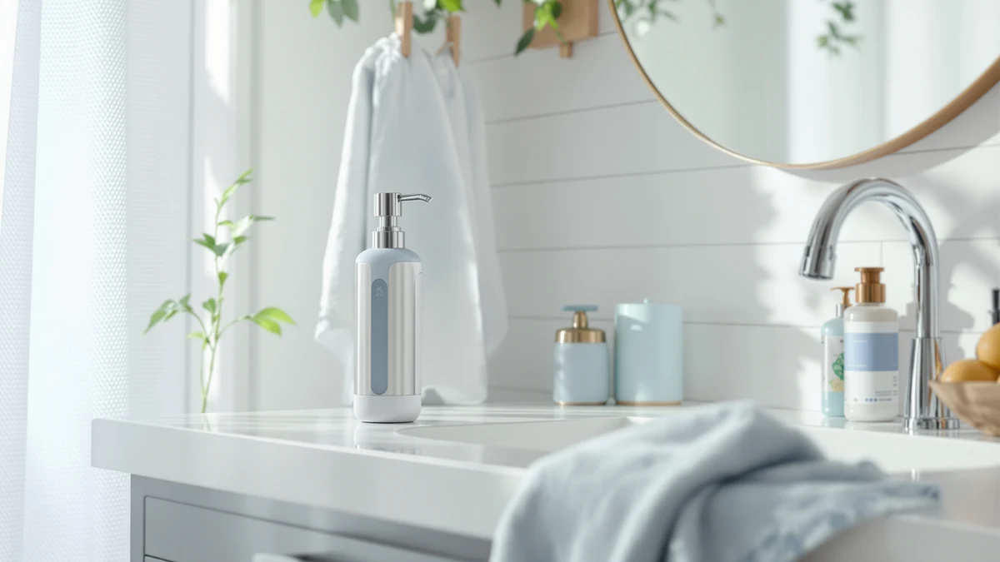

OXO Good Grips Stainless Review (2026): Worth It?
Prices and picks verified as of October 2026. Independent, reader-supported reviews.


Quick Answer
The OXO Good Grips Stainless Steel soap pump is our pick for a kitchen sink dispenser at $25.99, thanks to its one-handed pump design and nonslip base. If you want a cheaper alternative, the ABBI NIMO Matte Black Ceramic at $11.99 covers the basics for less than half the price.
Our pick: OXO Good Grips Stainless Steel, $25.99 Check Price on Amazon
Bottom line: our top pick is the OXO Good Grips Stainless Steel Easy Press Soap Dispenser - at $34.99.
Things to Know Before You Buy
- The OXO Good Grips Stainless Steel pump is designed for one-handed dispensing, so you can keep your other hand on a sponge or a dish while you pump.
- Its nonslip base is meant to keep the dispenser anchored on a wet counter instead of sliding every time you push the pump.
- At $25.99, it costs more than double the ceramic and glass alternatives covered later in this guide, which sit around $11.99.
- Amazon's listing for this dispenser doesn't publish a star rating, review count, or capacity figure, which is worth knowing if you typically lean on crowd ratings before buying.
This oxo good grips stainless review breaks down whether OXO's one-handed soap pump is worth $25.99 for your kitchen or bathroom counter, based on its design details, nonslip base, and how it stacks up against three lower-priced dispensers.
OXO built its reputation on kitchen tools that solve small daily frustrations, and the Good Grips Stainless Steel pump follows that pattern: a soft-press head, an angled spout, and a base built to stay put on a wet counter. We compared its listed features and price against the ABBI NIMO Matte Black Ceramic, the Sunrise Premium Amber Glass, and the Hyever dinosaur pump to see where the extra cost goes.
Why You Should Trust Us
Best Soap Dispensers researches dispensers the way a careful shopper would, by comparing manufacturer specs, pricing, and the feedback real owners leave on retail listings rather than running a private testing operation. For this oxo good grips stainless review, we pulled the dispenser's own feature list and current Amazon price, then lined it up against three other dispensers in the same category so you can see where the tradeoffs actually sit. Ilane Tall, our home and bath editor, verified every price and spec against the live Amazon listing before publishing, and we update prices and availability when they change.
We also covered other dispensers from OXO, ABBI NIMO, Sunrise Premium, and Hyever elsewhere on this site, so we can place this specific listing in a wider context instead of judging it in isolation. That cross-checking is how we caught the missing capacity figure and the absent star rating on this particular OXO listing, details that a quick glance at a single product page would easily miss.
Our Research Experience
We built this review by comparing the OXO Good Grips Stainless Steel listing against its closest rivals on Amazon, line by line. That means checking the manufacturer's own feature claims, the current price, and the pattern of comments buyers leave about one-handed pumping, grip stability, and nonslip bases on dispensers like it. We also weighed what OXO says about this pump against how the brand's other Good Grips tools typically hold up, since OXO has a long track record with handles and bases built for wet kitchen counters. Where the Amazon listing is missing information, like a star rating, review count, or capacity figure, we say so directly instead of filling the gap with a guess.
Overview & Specs

OXO Good Grips Stainless Steel
What we like
- One-handed pump design frees your other hand for dishes or a sponge
- Nonslip base keeps it anchored on wet counters
- Angled spout directs soap onto a sponge or into your hand
- Soft-press pump head is comfortable for repeated daily use
Flaws but not dealbreakers
- Costs more than double the ceramic and glass alternatives here
- No published capacity or size figure on the Amazon listing
- No star rating or review count published for this listing
| Material | ABS plastic |
| Size | — |
OXO's Good Grips line has built its name on kitchen tools that fix small annoyances, and the Stainless Steel soap pump follows the same approach. The one-handed pump head lets you dispense soap while your other hand stays on a dish or a sponge, which matters most during actual cleanup rather than a quick hand wash. OXO angled the spout to send soap toward a sponge or your palm instead of letting it run down the side of the bottle, a small detail that keeps the counter cleaner than a straight-nozzle dispenser.
The nonslip base is the feature most worth calling out in this oxo good grips stainless review, since a sliding dispenser is one of the most common complaints about countertop soap pumps. At $25.99, it costs more than the ceramic and glass dispensers covered later in this guide, and the Amazon listing doesn't publish a capacity figure or a star rating to weigh against that price. If the design details here solve a problem you've had with a cheaper dispenser, the extra cost buys a real fix rather than a cosmetic upgrade.
What We Liked
The strongest selling point in this OXO Good Grips Stainless Steel review is the one-handed pump mechanism. OXO designed the head so you can push it down with your palm or the side of your hand while your other hand stays on a dish, a sponge, or a kid who needs washing. The nonslip base addresses a real annoyance with countertop dispensers: a bottle that skates sideways every time you push the pump instead of dispensing cleanly. OXO also angled the spout so soap lands on a sponge or in your palm rather than dribbling down the side of the bottle, a detail that matters more than it sounds once you're standing at a sink with wet hands. The stainless-look finish gives it a more polished look next to a steel faucet or sink than the plastic bodies on cheaper dispensers tend to manage.
What Could Be Better
At $25.99, the OXO pump costs more than double what you'd pay for the ABBI NIMO ceramic or Sunrise Premium glass dispensers in this comparison, and the Amazon listing doesn't publish a capacity or size figure to justify exactly what you're paying for per ounce. The product listing also skips a published star rating and review count, so you can't lean on a crowd-sourced track record the way you might with other dispensers on this list. OXO doesn't publish the base material beyond noting the soft-grip pump head, which leaves open questions about how it holds up to years of daily pumping compared with a known quantity like glass or ceramic. The listing's color option is limited to black, so if you're matching a specific kitchen finish, you'll want to check that against your counter and faucet before buying rather than assuming a stainless look across the board.
Who Is It For?
The OXO Good Grips Stainless Steel dispenser fits a kitchen sink where you're cooking with messy hands and need to clean up without juggling a bottle. It also suits anyone who's dealt with a dispenser that slides across a wet counter every time they push the pump. If your priority is matching a specific decor style, like the amber glass look of the Sunrise Premium or a playful bathroom for kids like the Hyever dinosaur pump, one of the alternatives below will serve you better than this one. And if an $11.99 budget pump already does the job for you, the extra $14 here buys grip comfort and a nonslip base, not a fundamentally different dispensing experience.
It also fits anyone replacing an aging bottle that's already cracked or lost its pump action, since the one-handed mechanism and nonslip base solve problems that tend to show up only after a cheaper dispenser has been in daily use for a while. If you're outfitting a brand-new kitchen and have no specific complaint to fix, the price difference is harder to justify against the ABBI NIMO or Sunrise Premium.
Alternatives to Consider
If the price or the stainless-look finish doesn't fit your bathroom or kitchen, these three dispensers cover a ceramic finish, a glass refill option, and a kid-friendly design at roughly half the OXO's price.

Editor's Pick
ABBI NIMO Matte Black Ceramic
The ABBI NIMO Matte Black Ceramic trades the OXO's nonslip base and one-handed pump for a simpler ceramic body at less than half the price, a fair swap if grip comfort matters less to you than counter looks and cost.
$11.99
Check Price on Amazon
Best Value
Sunrise Premium Amber Glass Soap
The Sunrise Premium Amber Glass holds 16 ounces in a refillable glass body with a bamboo-look pump, a better fit if you'd rather see your soap through amber glass than rely on a stainless-finish plastic body.
$11.99
Check Price on Amazon
Premium Choice
Cute Cartoon Dinosaur Hand Soap
The Hyever yellow dinosaur pump skips the stainless-steel look entirely in favor of a shape built to get kids to actually wash their hands, which makes it the better pick for a kids' bathroom rather than a kitchen sink.
$11.99
Check Price on AmazonFrequently Asked Questions
Is the OXO Good Grips Stainless Steel soap dispenser worth $25.99?
Based on our research, the OXO Good Grips Stainless Steel dispenser is worth $25.99 if one-handed pumping and a nonslip base matter to you, since those two features address real complaints about cheaper countertop dispensers. If you don't need those specific details, the ABBI NIMO or Sunrise Premium alternatives in this oxo good grips stainless review do the basic job for less than half the price.
How does the OXO pump compare to the ABBI NIMO, Sunrise Premium, and Hyever alternatives?
The ABBI NIMO Matte Black Ceramic and Sunrise Premium Amber Glass both cost $11.99, less than half the OXO's $25.99, but neither publishes a nonslip base or a one-handed pump design the way OXO does. The Hyever dinosaur pump, also $11.99, is built around a kid-friendly shape rather than kitchen functionality, so it serves a different room entirely.
Does the OXO Good Grips Stainless Steel dispenser have a published star rating?
No. The Amazon listing for this dispenser does not publish a star rating or review count at the time of this review, so we based our comparison on the manufacturer's feature claims and pricing rather than a review-count figure.
Final Verdict
This oxo good grips stainless review comes down to whether one-handed pumping and a nonslip base are worth $14 more than a basic ceramic or glass dispenser. OXO's Good Grips Stainless Steel earns its $25.99 price with design details that solve real counter problems, the kind of small friction OXO has built a reputation on fixing. If you want those specific features, the OXO is the pick. If you just need a dispenser that doesn't slide across a wet counter, the ABBI NIMO or Sunrise Premium alternatives save you more than half the cost, and the Hyever dinosaur pump is the better call for a kids' bathroom instead of a kitchen sink. Weigh the missing star rating and capacity figure against the price before you buy, since those gaps in the listing are the main tradeoff for OXO's design upgrades.